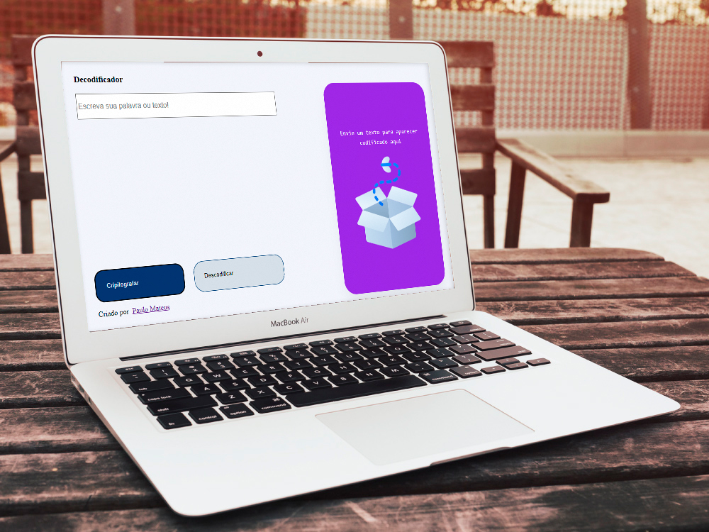
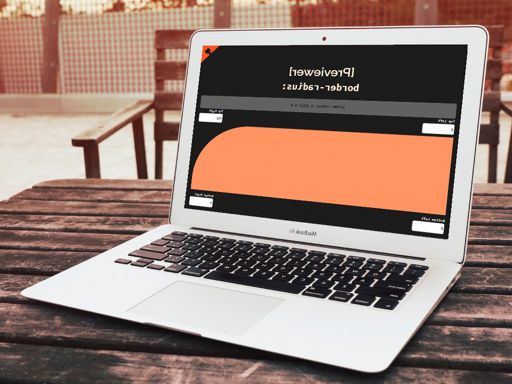

Desafios de javascript
Codificador e decodificador
Ser um estudante de programação principalmente auto didata significa estudar e praticar muito por isso eu estou constantemente buscando desafios para tentar me superar em programação, principalmente que envolva lógica de programação.
Estes projetos consistem em várias partes, tanto a visual como a funcional usando lógica de programação, o desafio do codificador onde você pode escrever mensagens e traduzir mensagens secretas.
Ver demonstração Controlar border radius
Esse outro desafio consiste em um controlador de bordas, onde ao aumentar os pixels a borda específica também fica mais curva, também um site responsível, esse desafio foi ótimo para praticar principalemente o javascript.
Ver demonstração ← Voltar ao portfolio